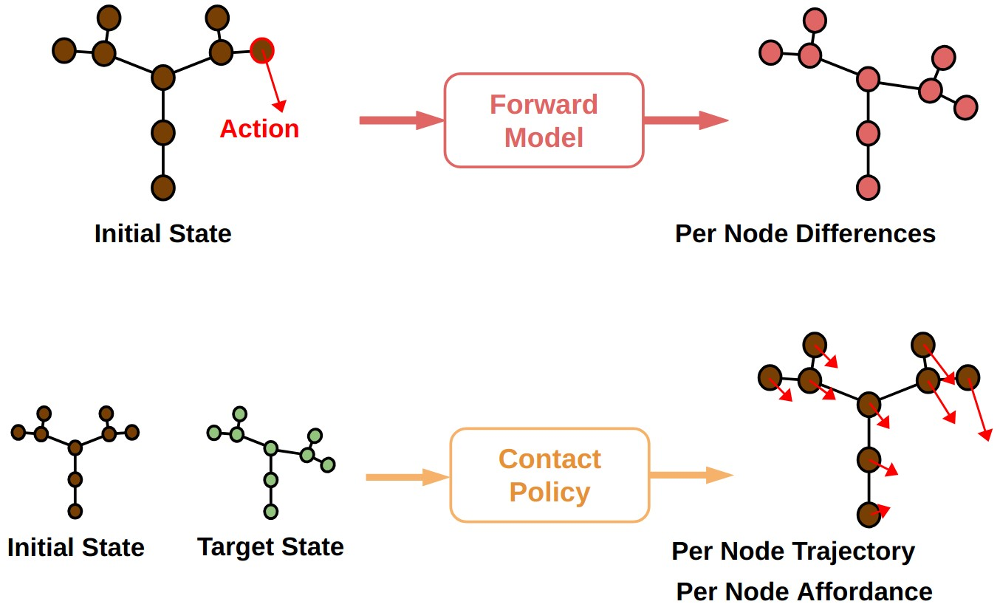

Graph Representation for Trees
Tree branches can be represented as graphs to train the forward model and the contact policy. Given an initial tree state and an applied action, the forward model predicts how the resulting tree has deformed by outputting per node differences.
The representation can also be trained to learn the contact policy. Given an initial tree state and target tree state, the contact policy predicts where and how to interact with the tree by outputting per node trajectory and per node afforance.
